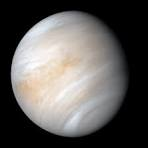
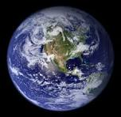
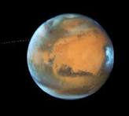
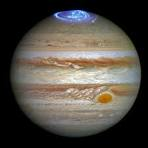
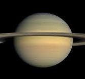
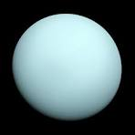
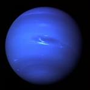

.jpeg)
Venus is the second planet from the Sun, the hottest planet in our solar system, and is named after the Roman goddess of love and beauty
Earth is the third planet from the Sun and the only astronomical object known to harbor life. This is enabled by Earth being an ocean world, the only one in the Solar System sustaining liquid surface water.
Mars Mars is the fourth planet from the Sun, and the seventh largest. It’s the only planet we know of inhabited entirely by robots.
Jupiter is the largest planet in our solar system and the fifth planet from the sun, known as a gas giant with no solid surface, famous for its Great Red Spot and numerous moons.
Saturn is the sixth planet from the sun and the second-largest in our solar system, known for its prominent ring system, and is a gas giant composed primarily of hydrogen and helium.
Uranus is the seventh planet from the Sun, an ice giant known for its unique axial tilt, causing it to appear to rotate on its side, and its blue-green color due to methane in its atmosphere.
Neptune is the eighth and farthest planet from the Sun in our solar system, an ice giant known for its deep blue color and powerful winds, and was discovered through mathematical predictions rather than direct observation.
